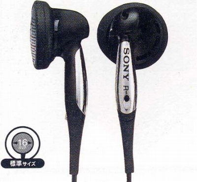
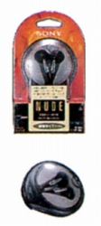
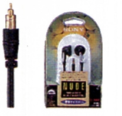
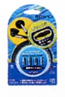
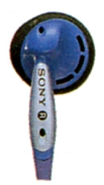

MDR-E848LP

■価格 3,300円
■型式 オープンエアダイナミック型
■振動板 16�oドーム型
■インピーダンス 16Ω
■再生周波数帯域 10-23,000Hz
■許容入力 50mW
■感度 108ｄB/mW
■コード 1.2ｍ OFCリッツ線 L型ステレオミニプラグ
■重量 6g（コード含まず）
■発売 1995年頃
■販売終了
■備考
コンパクトケース付属
キャリングポーチ付属、0.4mコードのMDR-E848SP（同価格）、
キャリングポーチ付属、0.4mコード マイクロプラグのMDR-E848MP1（同価格）あり
1.2mコード、ボリュームコントローラ付きのMDR-E848V（3,800円）あり
1995年頃はMDR-E848LPは単にMDR-E848に、848MP1は848MPとなった。

MDR-E848のコンパクトケースとパッケージ

MDR-E848MPのとパッケージ

MDR-E848Ｖのとパッケージ
なおカラーは通常型・SP・Vはブラックのみだが、MPにはブルーがある。

MDR-E848MP（ブルー）